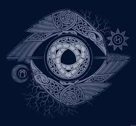
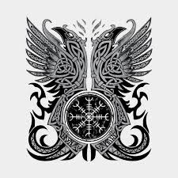
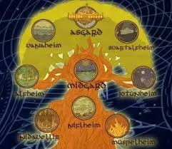
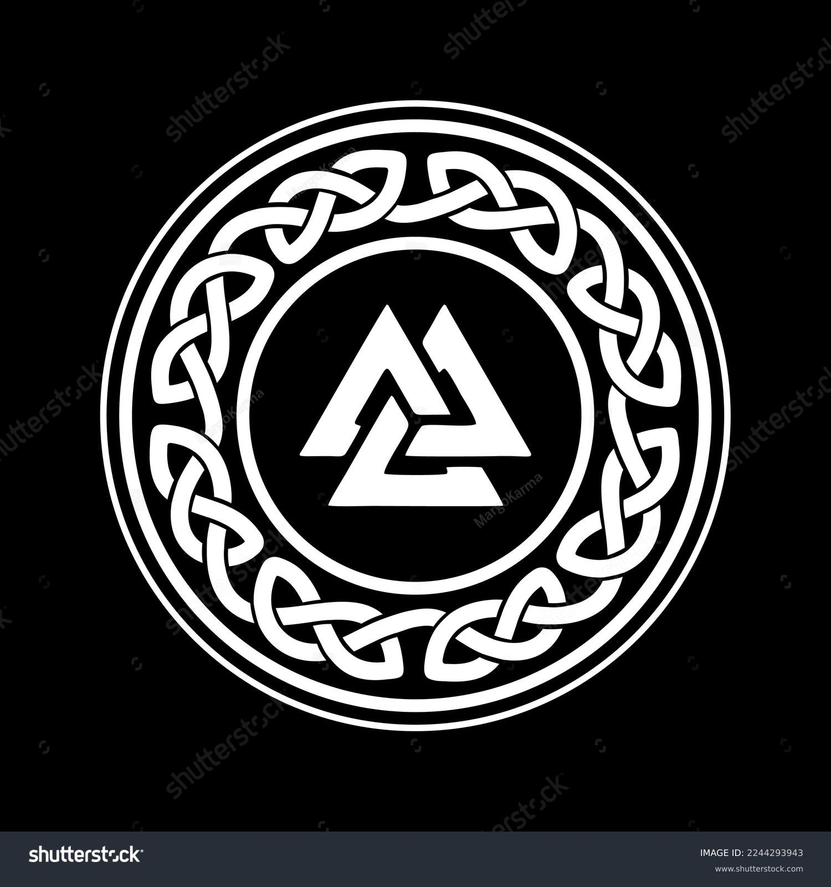

Odin sacrificed an eye, but gained a more sacred, divine level of wisdom in return. So the depictions of a one-eyed Odin represent the sacrifice of the earthly in exchange for the divine.

They are called Hugin and Munin and they sit on Odin's shoulders and tell him all that they saw. Hugin represents 'memory' and Munin represents 'thought'.

The Nine Realms are a group of vastly distant celestial bodies that are interconnected by the cosmic nexus Yggdrasil, and are home to various different races and cultures.

Odin's primary symbol is the Valknut, which consists of three interlocked triangles. The Valknut is thought to represent Odin's power and authority over life and death.